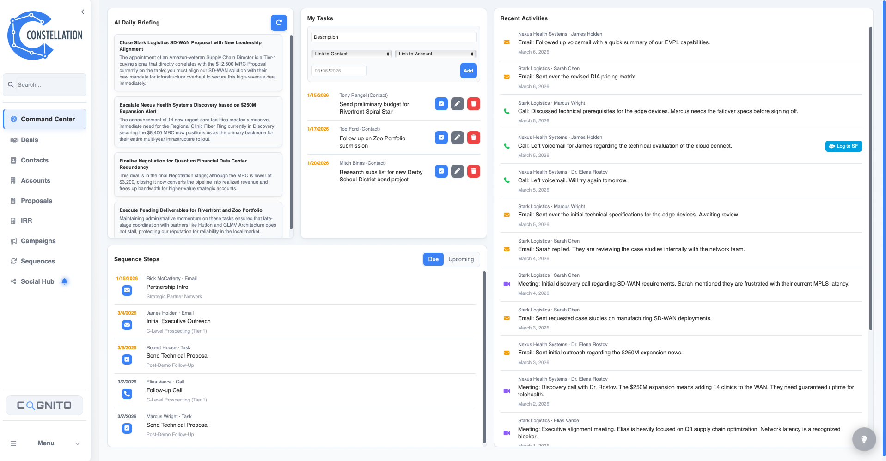
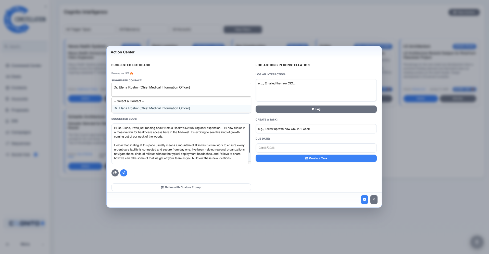
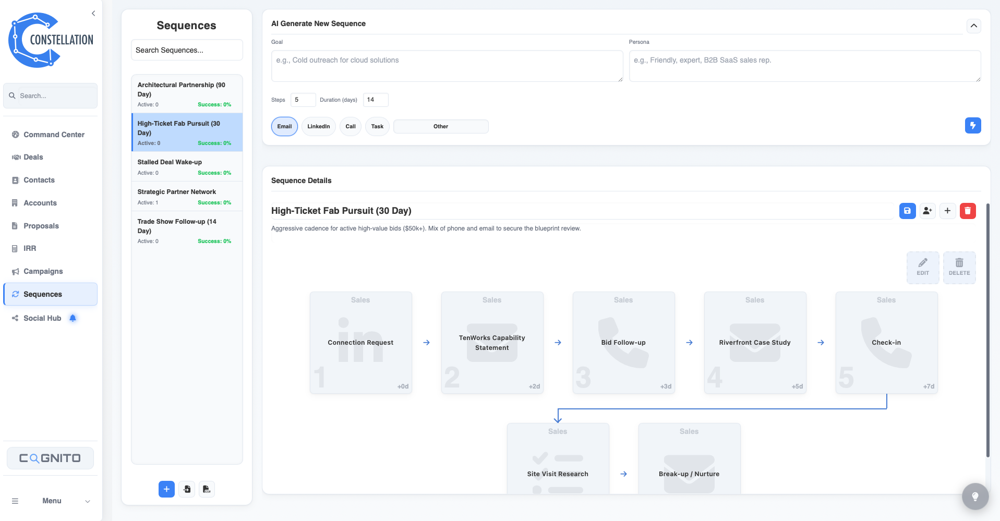
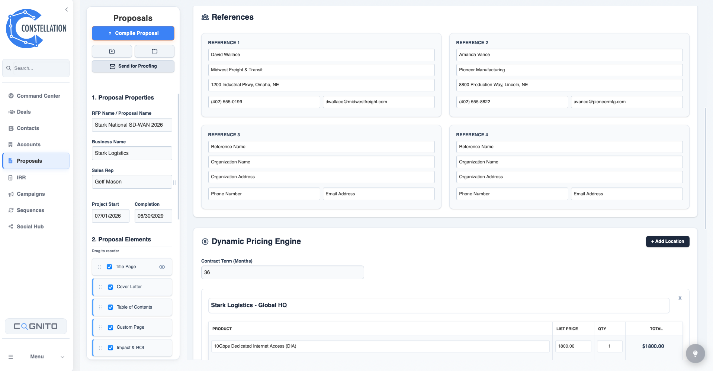
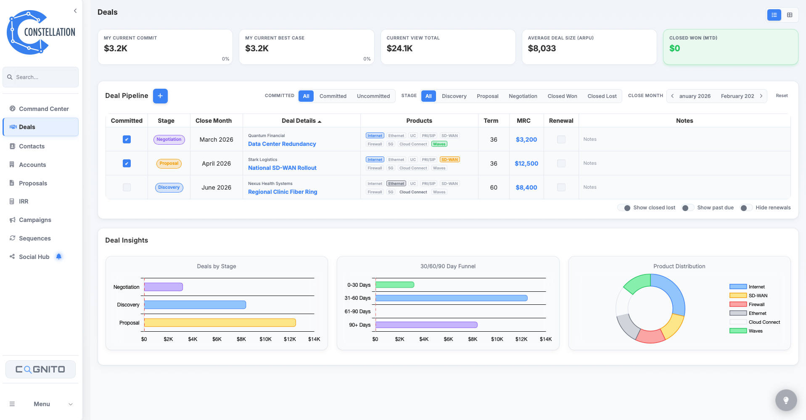
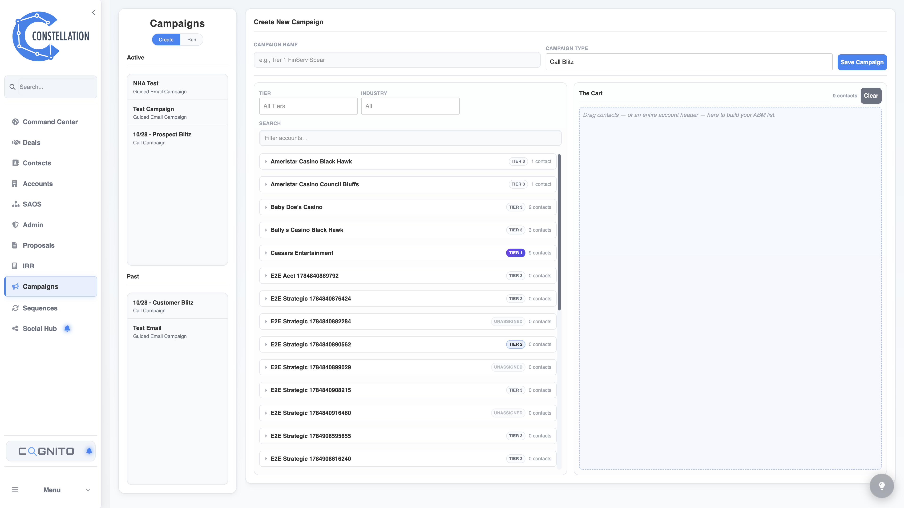
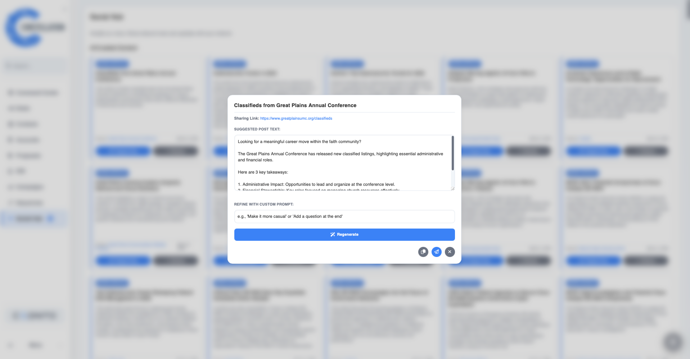
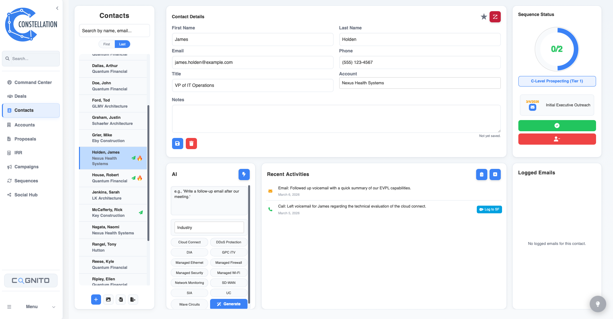

The sales operating system for teams that need strategy and execution in one place.
Constellation brings CRM execution, Cognito intent, AI outreach, sequences, proposals, IRR modeling, forecasting, and SAOS strategic account planning into one command center built for serious enterprise pursuits.
1
system from account strategy to logged execution
15
SAOS pursuit sections for deep account planning
0
swivel-chair hops between intent, outreach, and CRM

Why Constellation Exists
CRM captures activity. Constellation captures the strategy behind the pursuit.
Enterprise selling breaks when account strategy lives in slides, rep follow-up lives in inboxes, buying signals live in another vendor, and the CRM only tells leadership what already happened. Constellation closes that gap.
The Legacy Reality
Teams buy separate tools for account planning, intent, sequences, proposals, forecasting, and activity logging. Reps become the integration layer.
The Constellation Model
Strategy, signals, outreach, relationship context, deal economics, and follow-through stay connected to the account where the seller is actually working.
The Outcome
Leaders get inspection discipline. Reps get clarity. Priority accounts get a real operating system instead of a loose collection of notes.
CRM
The CRM workspace where real sales work gets done.
Constellation keeps the sales motion in one working system: daily execution, intent intelligence, sequences, pipeline, account strategy, campaigns, social selling, proposals, and contacts.
Command Center
The daily cockpit for sales execution.
Tasks, sequence steps, AI briefings, and recent activities sit on one screen so reps know what needs attention and managers can trust that the work is visible.

Cognito Intelligence
Buying signals that become action immediately.
Cognito monitors account-relevant news, scores relevance, and gives reps an action center to draft outreach, log activity, and create follow-up before the window closes.
AI Sequence Generator
Campaign strategy without the blank page.
Describe the persona, goal, timeline, and touch mix. Constellation generates the sequence, lets you tune it, and bulk-enroll contacts without leaving the workflow.



Enterprise Proposal & IRR Engine
From qualified opportunity to boardroom-ready package.
Build professional proposals from account context, attach technical collateral, model multi-site economics, stress-test IRR, and produce a client-ready package.
Pipeline & Forecasting
Pipeline views reps will actually maintain.
Toggle between list and Kanban, filter renewals, inspect commit and best case, and update stages or deal details without breaking selling flow.



High-Velocity Campaigns
Run the blitz, keep the context.
Guided call and email campaigns keep contact data, scripts, templates, notes, and activity logging in the same screen.
AI Social Hub
Turn signal into thought leadership.
Curated industry articles, marketing posts, and AI-generated LinkedIn drafts help reps stay visible with a useful point of view.



Intelligent Contact Management
Every person, sequence, touch, and insight in context.
Contact profiles connect activities, sequence status, tasks, AI compose, activity insight, emails, and enrichment paths so reps know who matters and why.
Strategic Account OS
SAOS turns account planning into an operating discipline.
Strategic Account OS is the strategy layer inside Constellation. It gives enterprise reps a structured account plan with Core and Deep Dive modes, pursuit thesis, stakeholder mapping, strategic tensions, land-and-expand paths, white-space analysis, 30/60/90 execution horizons, version history, PDF dossier export, and executive PowerPoint generation.
Why it matters: SAOS is not another CRM form. It captures strategic judgment: why the account should change, who matters, where the wedge is, what must be learned, and how the first win expands.
Account Snapshot
Account Snapshot
Live SAOS view with account context, strategic tiering, relationship status, pursuit priority, and plan completeness.
Core / Deep Dive Modes
Start with the essential pursuit plan, then expand into the full 15-section strategic framework when the account deserves deeper inspection.
Strategy Linked to Execution
The pursuit thesis, strategic tensions, entry points, white space, and 30/60/90 plan live beside account contacts, deals, proposals, and activities.
Executive-Ready Outputs
Export polished PDF dossiers and PowerPoint narratives so account strategy becomes inspectable, coachable, and shareable.
Integrations
Works with the systems that already matter.
Constellation can sit on top of an existing system of record or serve as the operating system for a lean team building its sales engine.
Salesforce Logging
Keep Salesforce clean without forcing reps to duplicate the work they already did in Constellation.
ZoomInfo Ready
Enrich accounts and contacts where reps need the data: inside the account, contact, campaign, and sequence workflows.
Supabase Foundation
Modern auth, database, Row Level Security, and Edge Functions support fast workflows with real data boundaries.
Get Started
Give priority accounts the operating system they deserve.
Constellation is for teams that want more than a CRM ledger: strategic account discipline, AI-assisted execution, real product workflows, and manager-visible follow-through.